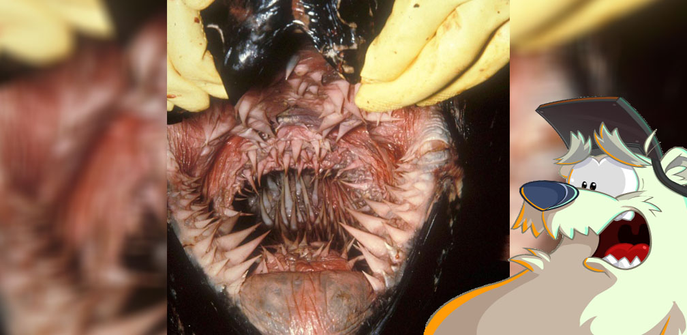

Sabias que...
La boca de la tortuga laúd es de las mas espantosas de todo el reino animal.

La tortuga laúd tiene un esófago repleto de afiladas espinas.
La tortuga laúd podría parecer adorable e inofensiva, pero espera a ver lo que hay dentro de su boca.
Debido a que esta especie se alimentan principalmente de medusas, las papilas también ayudan a la tortuga laúd a evitar ser picada por sus tentáculos.
Las estructuras, semejantes a afiladas y puntiagudas estalactitas, evitan que las resbaladizas medusas se escapen de su boca.
Aparte de su prominente boca, la especie de tortuga también tiene un esófago inusualmente largo que se extiende mucho más allá de su estómago y recorre todo el interior hasta la parte trasera.